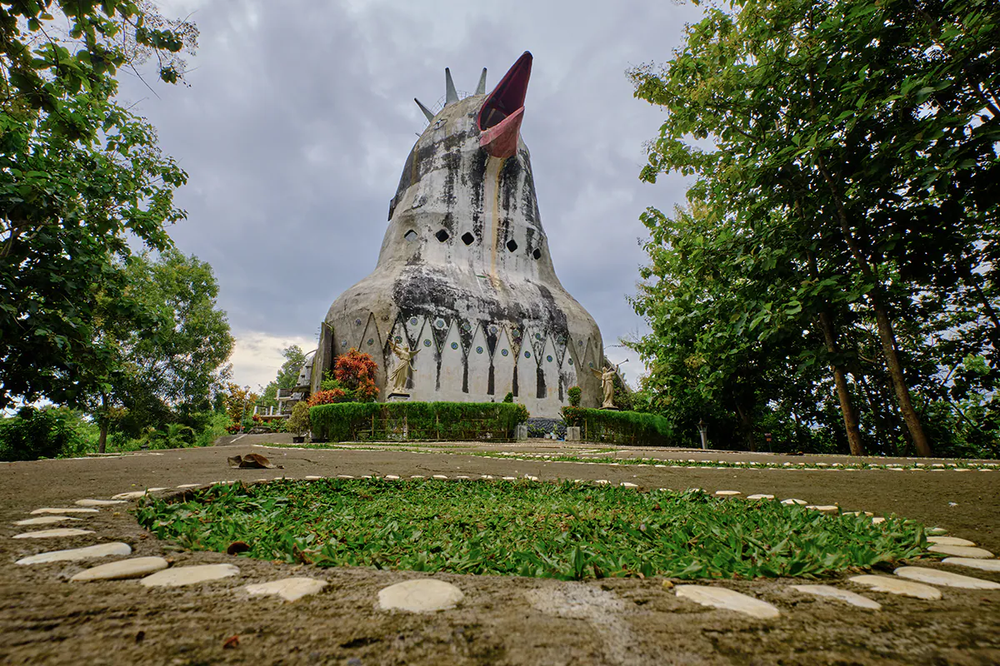

Candi Borobudur, Pusaka Kolosal Magelang, Jawa Tengah
Sobat Pesona pastinya sudah tidak asing kan dengan Candi Borobudur? Terletak di Kabupaten Magelang, Jawa
Tengah, candi yang sangat megah dan rupawan ini telah dikenal oleh wisatawan lokal maupun mancanegara
sebagai kuil Buddha terbesar di dunia. Wajar saja, karena Candi Borobudur memiliki luas sekitar 2500 meter
persegi, dengan panjang 121,66 meter, lebar 121,38 meter, dan tinggi 35,40 meter.
Selain dari skalanya yang besar, Candi yang sangat legendaris ini tentunya juga menyimpan beragam fakta
unik, serta berbagai macam hal menarik yang bisa Sobat Pesona temui saat berkunjung kesini. Sebelum Sobat
Pesona beranjak ke Candi Borobudur, simak dulu yuk ulasan lengkapnya di bawah ini!
Sejarah

Candi legendaris ini diperkirakan dibangun pada abad ke-8, tepatnya sekitar tahun 750-an masehi pada masa
pemerintahan dinasti Syailendra. Pembangunannya diperkirakan berlangsung sekitar 75 tahun sampai
akhirnya rampung pada saat pemerintahan raja Samaratungga berlangsung. Candi Borobudur terletak diatas
bukit hijau yang asri di mana Sobat Pesona bisa menyaksikan bukit-bukit hijau lain di sekitarnya.
Bangunannya sendiri terdiri atas jutaan blok batu yang dibuat kedalam tiga struktur yang menggambarkan
tingkatan alam semesta menurut filsafat Buddha. Bangunan kolosal ini juga dihiasi oleh 2.672 panel
relief dan 504 patung Buddha.
Terjadinya erupsi Gunung Merapi yang dahsyat pada sekitar tahun 1006 menyebabkan Candi Borobudur
tertimbun oleh debu vulkanik selama ratusan tahun lamanya. Beberapa abad kemudian, Candi Borobudur
akhirnya ditemukan kembali pada tahun 1814 oleh seorang insinyur Belanda bernama Hermanus Christiaan
Cornelius, ketika kerajaan Inggris yang diwakili oleh Thomas Stamford Raffles menduduki beberapa bagian
pulau Jawa, termasuk Jawa Tengah. Setelah Indonesia merdeka, pada akhir tahun 60-an pemerintah bekerja
sama dengan UNESCO untuk merenovasi Candi Borobudur selama bertahun-tahun, sampai akhirnya UNESCO
menetapkan mahakarya agung tersebut sebagai Situs Warisan Dunia di tahun 1991.
Destinasi

Candi legendaris ini diperkirakan dibangun pada abad ke-8, tepatnya sekitar tahun 750-an masehi pada masa
pemerintahan dinasti Syailendra. Pembangunannya diperkirakan berlangsung sekitar 75 tahun sampai
akhirnya rampung pada saat pemerintahan raja Samaratungga berlangsung. Candi Borobudur terletak diatas
bukit hijau yang asri di mana Sobat Pesona bisa menyaksikan bukit-bukit hijau lain di sekitarnya.
Bangunannya sendiri terdiri atas jutaan blok batu yang dibuat kedalam tiga struktur yang menggambarkan
tingkatan alam semesta menurut filsafat Buddha. Bangunan kolosal ini juga dihiasi oleh 2.672 panel
relief dan 504 patung Buddha.
Terjadinya erupsi Gunung Merapi yang dahsyat pada sekitar tahun 1006 menyebabkan Candi Borobudur
tertimbun oleh debu vulkanik selama ratusan tahun lamanya. Beberapa abad kemudian, Candi Borobudur
akhirnya ditemukan kembali pada tahun 1814 oleh seorang insinyur Belanda bernama Hermanus Christiaan
Cornelius, ketika kerajaan Inggris yang diwakili oleh Thomas Stamford Raffles menduduki beberapa bagian
pulau Jawa, termasuk Jawa Tengah. Setelah Indonesia merdeka, pada akhir tahun 60-an pemerintah bekerja
sama dengan UNESCO untuk merenovasi Candi Borobudur selama bertahun-tahun, sampai akhirnya UNESCO
menetapkan mahakarya agung tersebut sebagai Situs Warisan Dunia di tahun 1991.
Cara menuju magelang
Ada dua cara yang bisa Sobat Pesona tempuh untuk mencapai Magelang, yaitu melalui jalur udara dan jalur
darat. Jalur udara bisa dicapai menggunakan pesawat terbang sedangkan jalur darat bisa ditempuh menggunakan
transportasi mobil atau kereta api.
- Jalur udara: Magelang bisa dijajaki Sobat Pesona dengan jalur udara yang
mendarat di Bandar Udara Internasional Adisutjipto yang ada di Kota Yogyakarta. Setelah itu Sobat Pesona
bisa melanjutkan perjalanan ke Kota Magelang menggunakan angkutan umum atau sewa kendaraan selama 1 jam
perjalanan.
- Jalur darat: Sobat Pesona bisa melalui Jalur Tol Trans Jawa dari Jakarta
dengan waktu perjalanan kurang lebih 8 jam menggunakan mobil pribadi. Atau, bisa juga naik bis antar
kota yang berhenti di Terminal Tidar atau yang juga dikenal dengan sebutan Terminal Soekarno-Hatta.
Alternatif lainnya adalah dengan menggunakan kereta api dari stasiun kota besar di Jawa menuju Stasiun
Yogyakarta, baik di Stasiun Tugu atau Lempuyangan. Lalu, dilanjutkan dengan angkutan umum atau menyewa
kendaraan ke Kota Magelang kurang lebih sekitar 1 jam perjalanan.
"Jelajahi pesona Indonesia yang luar
biasa di 'Wonderful Indonesia'! Kunjungi situs resmi mereka untuk informasi lebih lanjut."
Daftar pariwisata lainnya
| Nama Wisata |
Provinsi |
Jumlah Wisatawan |
| Bali |
Bali |
150 |
| malioboro |
yogyakarta |
200 |
| Candi Prambanan |
Yogyakarta |
120 |
| Bromo |
Jawa Timur |
50 |
| Danau Toba |
Sumatra Utara |
3000 |
| Raja Ampat |
Papua Barat |
20000 |
Saran Dan Masukkan